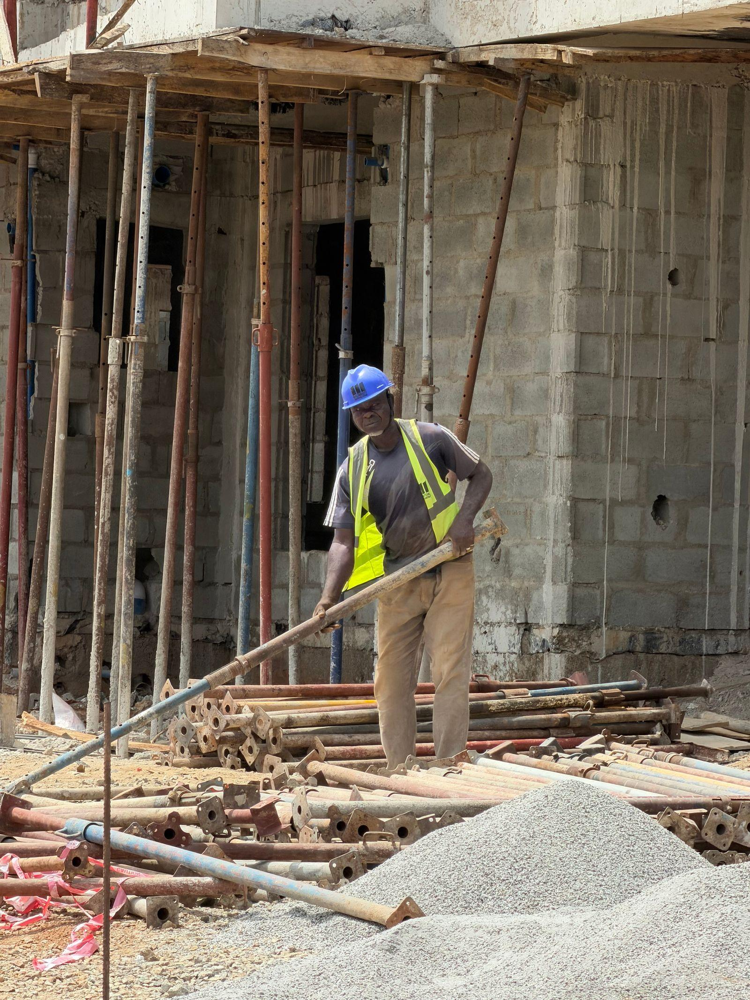

Vad letar du efter?
Saltängen äger och utvecklar kvarter kring stationerna i fjorton svenska mellanstäder – kontor, bostäder, handel och hotell i samma kvarter.
Läs om vår verksamhet- 01
Kontor
1,6 miljoner kvadratmeter kontor nära resecentrum, från 50 till 20 000 kvadratmeter.
- 02
Hyresbostäder
14 800 lägenheter i stadskärnorna, med bostadskö på vår webbplats.
- 03
Handel och restaurang
Gatuplan som lever – 1 100 butiker, kaféer och restauranger.
- 04
Hotell
19 hotellfastigheter vid stationerna, hyrda av nordiska hotellkedjor.
- 05
Stadsutveckling
Detaljplaner och nya kvarter tillsammans med kommunerna.
- 06
Våra bolag
Fyra affärsområden och en egen byggrörelse.
- 07
Aktien
SALT B, substansvärde och rapporter.
- 08
Karriär
Fastighetstekniker, projektchefer och uthyrare i fjorton städer.
Bygg staden du bor i
Våra 5 100 medarbetare jobbar i fjorton städer, och de flesta bor i staden där de arbetar. I Saltängen Bygg finns snickare, murare och projektchefer som specialiserat sig på gamla industribyggnader.
Huvudkontoret ligger fortfarande i yllefabriken från 1986 – vi har bara byggt ut den två gånger.
- Borås
 Projektchef ombyggnadLäs mer och ansök
Projektchef ombyggnadLäs mer och ansök - Gävle
 Drifttekniker, kontorsfastigheterLäs mer och ansök
Drifttekniker, kontorsfastigheterLäs mer och ansök - Linköping
 Uthyrare kommersiella lokalerLäs mer och ansök
Uthyrare kommersiella lokalerLäs mer och ansök - Norrköping
 ByggnadsantikvarieLäs mer och ansök
ByggnadsantikvarieLäs mer och ansök
Illustrationsbilder
Från stationsläge till levande kvarter
- 01
Läget
Vi köper bara inom tio minuters gångavstånd från en station med regional- eller fjärrtåg.
- 02
Detaljplan
Vi tar fram planprogram tillsammans med kommunen och bjuder in grannar till öppna verkstäder.
- 03
Bygg och ombyggnad
Saltängen Bygg river så lite som möjligt och bygger nytt där det behövs.
- 04
Förvaltning
Egen stadschef, egna fastighetstekniker och lokala uthyrare på varje ort.
Senaste från Saltängen

Delårsrapport januari–september 2026
Förvaltningsresultatet ökade med 7 procent och uthyrningsgraden steg till 94,1 procent.
Läs merSaltängen köper mark vid Ostlänken
46 000 kvadratmeter mark i Norrköping och Linköping för 610 miljoner kronor.
Läs mer
Spinnrocken i Borås byggstartar
Ombyggnaden av väveriet ska vara klar till årsskiftet 2027/2028.
Läs mer

Sverige växer inte bara i Stockholm. Det är i Gävle, Borås och Växjö som unga familjer köper sin första bostad och företag öppnar sitt nästa kontor.
Fyrtio år i stadskärnan
 1986
1986Tre norrköpingsbor köper den nedlagda yllefabriken vid Motala ström.
 1994
1994Det första kvarteret utanför Norrköping: ett mejeri i Linköping blir kontor.
 2002
2002Saltängen Bygg grundas för att klara ombyggnaderna själva.
 2009
2009Saltängen listas på Nasdaq Stockholm, mitt i finanskrisen.
 2017
2017Strategin om stationsnära lägen antas – innehav långt från tåget säljs.

2022Saltängen etablerar sig i Sundsvall och Kalmar.
 2026
2026Marken vid Ostlänkens nya stationer förvärvas.
Kommande händelser
- feb92027
 Nästa
NästaBokslutskommuniké 2026
- mar112027
 Kommande
KommandeStadsvandring för aktieägare i Borås
- apr272027
 Kommande
KommandeÅrsstämma i Norrköping
SALT B54,26 SEK −0,8 %Nasdaq Stockholm Large Cap · exempeldata
Finansiell informationKontor, bostad, stad och bygg
 Kontor
KontorSaltängen Kontor
1,6 miljoner kvadratmeter kontor i fjorton städer.
 Bostäder
BostäderSaltängen Bostad
14 800 lägenheter, de flesta i kvarter med butiker i bottenplan.
 Handel och hotell
Handel och hotellSaltängen Stad
Handel, restauranger, hotell och parkering.
 Byggrörelse
ByggrörelseSaltängen Bygg
Om- och nybyggnad i koncernens egna kvarter.
Från textilfabrik till stadskärna
Saltängen började 1986 när tre norrköpingsbor köpte den nedlagda yllefabriken vid Motala ström för 4,2 miljoner kronor och gjorde om den till kontor. Industrilandskapet i Norrköping blev mallen: ta tillvara gamla byggnader i stadskärnan, fyll dem med människor och bygg nytt runt omkring.
- 112mdr kr01 / 04
Marknadsvärde
- 14städer02 / 04
Mellanstäder med kvarter
- 41kvarter03 / 04
Under utveckling
- 21,4mdr kr04 / 04
Omsättning 2025

Det grönaste huset är det som redan står
Hälften av vår yta finns i byggnader som är äldre än 70 år. Att bygga om i stället för att riva sparar i snitt 350 kilo koldioxid per kvadratmeter. Nya hus byggs med trästomme där det går, och samtliga fastigheter ska vara energiklass C eller bättre till 2030.
- 01–60 %klimatpåverkan per ny kvadratmeter jämfört med 2020
- 02100 %av fastigheterna i energiklass C eller bättre till 2030
- 0310 minmax gångavstånd till station för nya förvärv